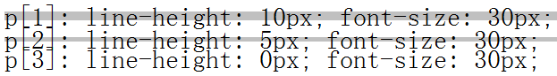
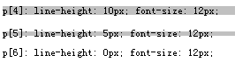
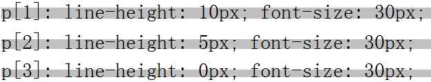
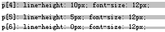

RD5017: Safari Chrome 中行框高度计算有误
标准参考
关于 Line Height （行高）计算说明，请参照 W3C CSS 2.1 规范 10.8 节： http://www.w3.org/TR/CSS21/visudet.html#line-height
关于 Leading and half-leading （差异半差异） 说明，请参照 W3C CSS 2.1 规范 10.8.1 节： http://www.w3.org/TR/CSS21/visudet.html#leading
关于 Inline formatting context （行内格式化上下文）说明，请参照 W3C CSS 2.1 规范 9.4.2 节： http://www.w3.org/TR/CSS21/visuren.html#inline-formatting
问题描述
Webkit 浏览器下行框高度计算还依赖于 'font-size' 属性值，在 'line-height' 属性值明显小于 'font-size' 属性值设置时，将导致实际计算出的行框高度大于其他浏览器。
造成的影响
在父容器 ‘height’ 值设置为 'auto' 时，父容器高度由其内容高度决定；内容高度又由行框高度计算值决定。 Webkit 浏览器中行框高度计算失误将导致父容器实际高度计算有误。
受影响的浏览器
| Chrome Safari |
|---|
问题分析
根据规范相应描述，行框高度计算过程大致如下：
- 根据 'line-height' 属性计算出每个行内元素的行内框高度；
- 根据 'vertical-align' 属性计算出每个行内框的垂直对齐方式；
- 行框的高度是垂直对齐排列最上面框的定边和最下边框的底边距离；
- 如果行内框字号设置大于行内框的 'line-height' 设置，文字将溢出当前行框，他可能造成多行时文字相互覆盖；
- 每个计算出的行框在垂直高度上排列没有间隙；
- 在没有其他块级内容的情况下，整个容器的高度取决于多个行框累计的高度。
实际中，由于 line-box 不可视，这将使得我们无法直观的看到 line-box 的计算高度。本例中，我们将使用一些 "技巧" 使 line-box 可视化，并可测量，大致思路为：
- 在一宽度足够大的容器内使用单一行内非替换元素，为其设置 'line-height' 属性，使行内元素产生指定高度的行内框；
- 在单一行内非替元素情况下，容器内行框高度计算会与此单一行内框高度一致；
- 容器在 'height' 值为初始的 'auto' 和 'padding:0' 设定的情况下，高度值会等于内部单一含行框高度；
- 为容器添加背景色，此时背景的范围会与行框高度恰好一致。
根据以上思路编写如下代码，其中 P 标记为容器块，'padding' 属性被这设置为 0； SPAN 标记为行内非替换元素，他将继承容器 P 标记内设置的 ‘line-height’ 和 'font-size' 设定，同时统一字体为 ’simsun‘ 避免出现字体导致高度计算的差异：
<h1>第一组</h1> <p style="padding: 0; line-height: 10px; font-size: 30px; background:silver; font-family:simsun; "> <span>p[1]: line-height: 10px; font-size: 30px;</span> </p> <p style="padding: 0; line-height: 5px; font-size: 30px; background:silver; font-family:simsun; "> <span >p[2]: line-height: 5px; font-size: 30px;</span> </p> <p style="padding: 0; line-height: 0px; font-size: 30px; background:silver; font-family:simsun; "> <span >p[3]: line-height: 0px; font-size: 30px;</span> </p> <h1>第二组</h1> <p style="padding: 0; line-height: 10px; font-size: 12px; background:silver; font-family:simsun; "> <span>p[4]: line-height: 10px; font-size: 12px;</span> </p> <p style="padding: 0; line-height: 5px; font-size: 12px; background:silver; font-family:simsun; "> <span>p[5]: line-height: 5px; font-size: 12px;</span> </p> <p style="padding: 0; line-height: 0px; font-size: 12px; background:silver; font-family:simsun; "> <span>p[6]: line-height: 0px; font-size: 12px;</span> </p> <h1>第三组</h1> <p style="padding: 0; line-height: 4px; font-size: 5px; background:silver; font-family:simsun; "> <span>p[7]: line-height: 4px; font-size: 5px;</span> </p> <p style="padding: 0; line-height: 2px; font-size: 5px; background:silver; font-family:simsun; "> <span>p[8]: line-height: 2px; font-size: 5px;</span> </p> <p style="padding: 0; line-height: 0px; font-size: 5px; background:silver; font-family:simsun; "> <span>p[9]: line-height: 0px; font-size: 5px;</span> </p>
代码中 P 元素的背景色高度范围恰好表示为 line-box 行高的高度，这里一共有 9 个 P 标记代表不同的行高设置情况，其中每三个一组代表不同的 'font-size' 设置情况。三组中均保证 ‘font-size’ 值比 'line-height' 值高，使文本内容可以溢出 line-box 高度。
观察实际效果：
| IE6 IE7 IE8 Firefox Opera | |
|---|---|
| 第一组 |  |
| 第二组 |  |
| 第三组 |  |
| Safari | |
| 第一组 |  |
| 第二组 |  |
| 第三组 |  |
| Chrome | |
| 第一组 |  |
| 第二组 |  |
| 第三组 |  |
对照上表，灰色区域等同于 line-box 的实际高度，在 IE6 IE7 IE8 Firefox Opera 浏览器中行 line-box 的高度计算与 'font-size' 设置值无关，进跟其中唯一行内非替换元素 SPAN 的行内框高度有关，此时 'line-height' 值等于 line-box 的计算高度，'line-height' 值缩小直接导致 line-box 计算高度同等变小，这是符合规范描述的计算方法。
但是在 Safari Chrome 中， line-box 的计算高度还依赖于 'font-size' 值，随着 ‘line-height’值逐步缩小，其变化规律是非线性的，无明显规律可寻。
截图测量每个 line-box 高度如下表：
| IE6 IE7 IE8 Firefox Opera | Safari | Chrome | |
|---|---|---|---|
| 第一组 | p [1] line-box 测量值为 10px p [2] line-box 测量值为 5px p [3] line-box 测量值为 0px |
p [1] line-box 测量值为 16px p [2] line-box 测量值为 14px p [3] line-box 测量值为 11px |
p [1] line-box 测量值为 16px p [2] line-box 测量值为 14px p [3] line-box 测量值为 11px |
| 第二组 | p [4] line-box 测量值为 10px p [5] line-box 测量值为 5px p [6] line-box 测量值为 0px |
p [4] line-box 测量值为 10px p [5] line-box 测量值为 7px p [6] line-box 测量值为 4px |
p [4] line-box 测量值为 10px p [5] line-box 测量值为 7px p [6] line-box 测量值为 4px |
| 第三组 | p [7] line-box 测量值为 4px p [8] line-box 测量值为 2px p [9] line-box 测量值为 0px |
p [7] line-box 测量值为 4px p [8] line-box 测量值为 3px p [9] line-box 测量值为 2px |
p [7] line-box 测量值为 6px p [8] line-box 测量值为 5px p [9] line-box 测量值为 4px |
表中明确表示出本例情况，在相同 'line-height' 设置时，Safari Chrome 对 line-box 的计算高度会较其他浏览器大。
在字号小于 12px 后，由于 Chrome 中文版自身存在 12px 字号渲染 Bug ，其小于 12px 的字号均用 12px 渲染；这导致之后 line-box 的计算高度又与 Safari 浏览器不同。
总之，当某个行内块的 'font-size' 值设置大于实际 line-box 计算高度时，使用 Safari Chrome 将得到与规范算法相比较大的 line-box 计算高度，从而导致包含 line-box 的容器高度计算错误。
解决方案
为了取得正常布局，建议 'line-height' 计算值永远大于 'font-size' 计算值设置。
参见
知识库
相关问题
测试环境
| 操作系统版本: | Windows 7 Ultimate build 7600 |
|---|---|
| 浏览器版本: |
IE6 IE7 IE8 Firefox 3.6 Chrome 5.0.317.2 dev Safari 4.0.4 Opera 10.51 |
| 测试页面: | line_box_height.html |
| 本文更新时间: | 2010-08-04 |
关键字
line-box line-height height font-size 行高计算 字号